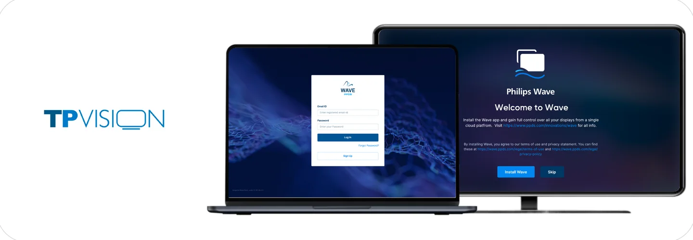
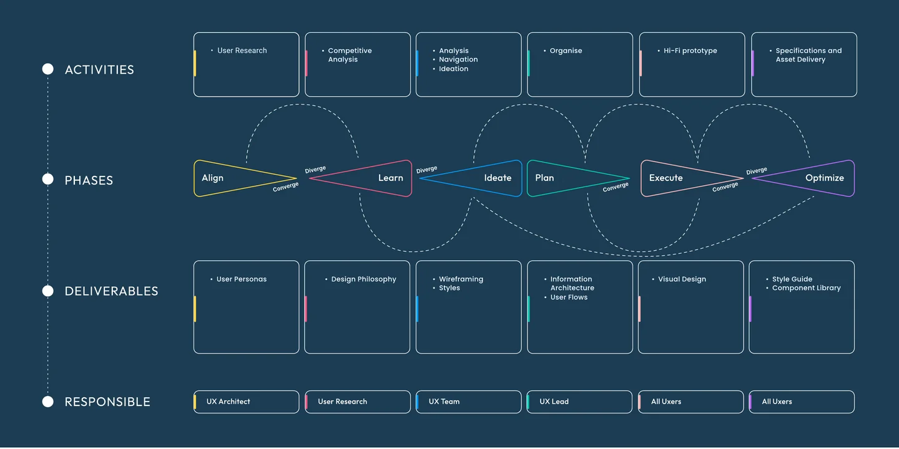
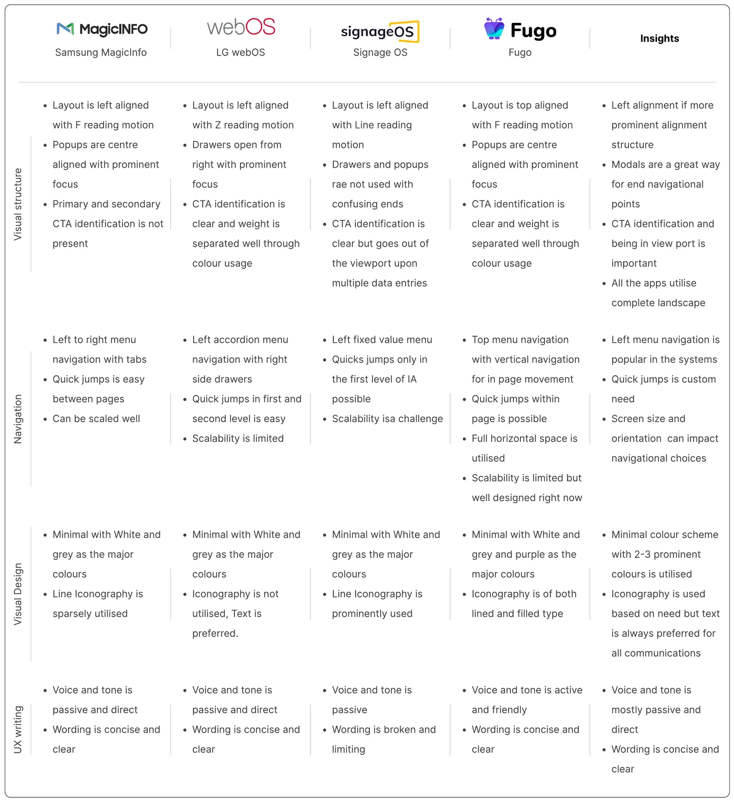
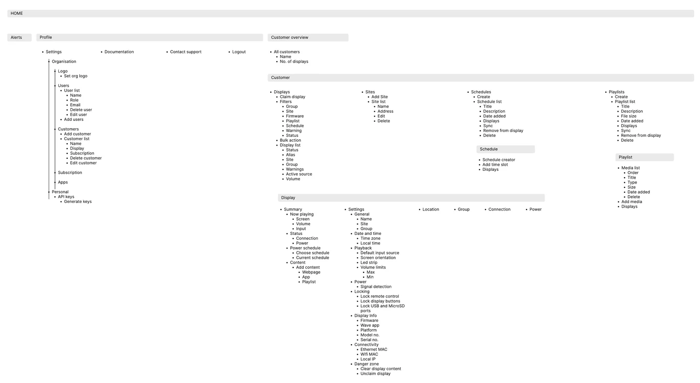
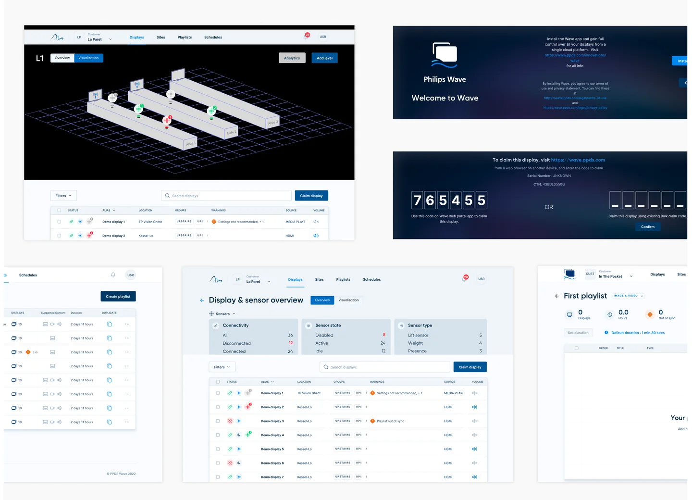
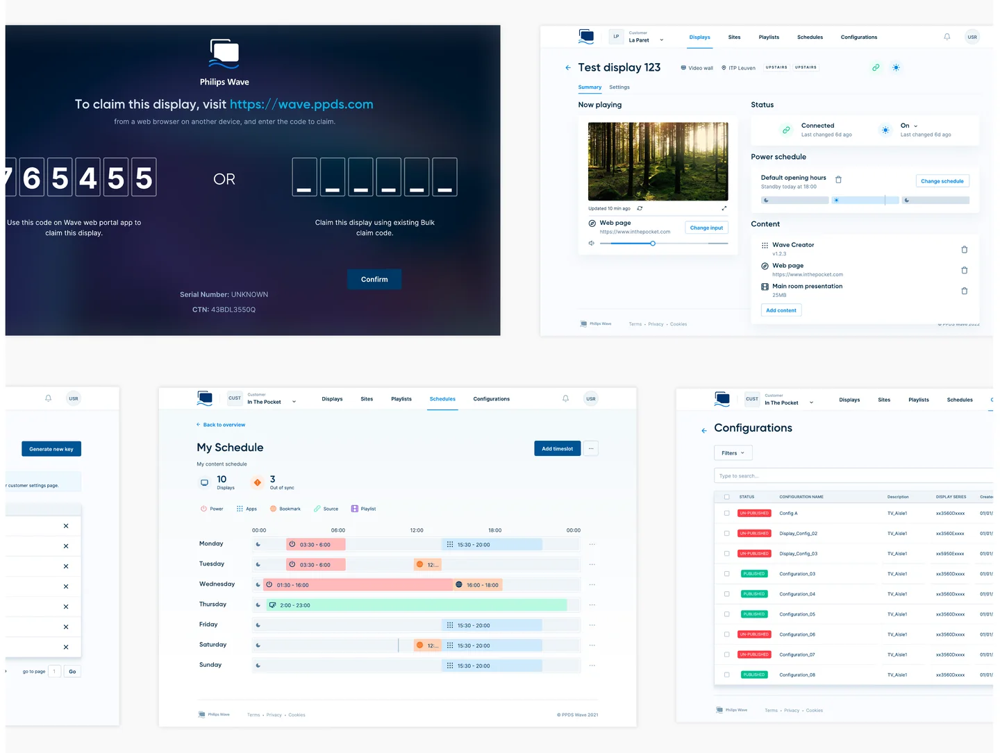
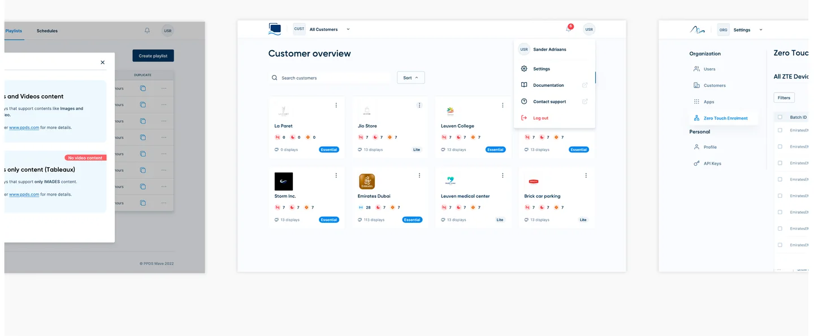

TP Vision
Signage Display Management System
One cloud portal to claim, schedule and look after every Philips signage display.
- Client
- TP Vision, for Philips Wave
- Studio
- PeepalDesign
- Platform
- Web portal and the on-display Wave app
- Scope
- Research, information architecture, visual design and design system

What changed
- Zero touch
- From factory to customer: a display shows a code when switched on, and is claimed from the portal in one step.
- 4 sections
- Displays, Sites, Schedules and Playlists, the same for every customer, in place of a navigation that had grown piece by piece.
- 1 system
- A component library that keeps the portal and the display screens consistent as Wave grows.
01 · The brief
Wave had grown request by request, and it showed.
Wave is TP Vision's cloud platform for managing Philips signage displays: claiming them, grouping them into sites, scheduling what they play and keeping an eye on their health. Its workflows had grown organically, one customer or admin request at a time, so moving between tasks felt disjointed.
Our job was to redesign those workflows into one cohesive experience that matched the brand, with features that are easy to understand.
02 · The approach
Six phases took the project from definition to delivery, each one widening the problem and then narrowing it down.


03 · How we got there
-
1
Align: agreeing on the problem
We started by pulling together everything TP Vision already knew about Wave.
An alignment workshop, the target users, a UX audit of the live portal and a study of competing products all pointed at the same three problems:
- Workflows that broke apart between tasks
- Too many features to make sense of
- No clear information hierarchy
We turned these into north stars for every design decision that followed: a cohesive experience, feature prioritisation and a well-defined information hierarchy.
-
2
Learn: the competitor ecosystem
We studied how other signage platforms handle the same jobs, across four lenses.
Samsung MagicInfo, LG webOS, signageOS and Fugo, compared on visual structure, navigation, visual design and UX writing. What we took away:
- Left-aligned layouts and left-hand menus are what people in this space expect
- Modals work well as the end point of a navigation path
- The primary action has to be obvious, and has to stay in view
- Scalable navigation is rare: most competitors struggle once the menu grows
- Minimal colour, with two or three strong accents, and text over icons for anything important
-
3
Learn: a design philosophy
The study became five rules the team could hold every screen against.
- Use colour sparingly, to keep the cognitive load low
- Give every task a linear path, so it is quick to learn
- Make it clear when an action can apply to many items at once
- Show system status at all times, for the navigation and for every display
- Plan for scale: more displays, more menu items and more actions
-
4
Ideate: proto-personas
Workshop notes were sorted into proto-personas for the two people who live in Wave.
System integrator
Mark Rake
40+, US. An electrical engineer with 15 years in system integration, display administration and installation.
“I thrive on turning technological complexities into streamlined, integrated solutions.”
Day to day
- Designs and installs integrated display systems
- Administers displays across the wider architecture
- Asks operators for reports on scheduled promos and campaigns
Pain points
- Seeing a large fleet and finding one device in it
- Platform instability as new display types are added
- Switching between different customers' views
Day-to-day operator
Robin Grey
18 to 28, US. Five years in IT, from technical support to running displays every day.
“Success in IT operations is about ensuring problems don't arise in the first place.”
Day to day
- Checks the health of the display fleet and reports issues
- Troubleshoots, and escalates what he can't fix
- Uploads and schedules customer promos and playlists
Pain points
- Slow, outdated tools in daily operations
- Unclear procedures, and no clear path to escalate
- User management sits outside his access
-
5
Plan: information architecture
We mapped the whole portal to see how people move through it, and fixed the navigation at the level of the application.
Everything a customer owns now sits under one customer, with the same four sections in the main navigation:
- Displays
- Sites
- Schedules
- Playlists
Each display opens to a Summary (what is playing, status, power schedule, content) and its Settings, with the irreversible actions kept apart in a Danger zone. Organisation settings (users, customers, subscription, apps), alerts and a customer overview sit above, at the top level.
-
6
Execute: hi-fi screens
High-fidelity screens brought the structure and the philosophy together, for the web portal and for the display itself.
They cover the whole life of a display, from the moment it is switched on in a customer's building to the day it is unclaimed.
-
7
Optimize: a design system
A component library of interaction patterns keeps the product consistent, and easy to improve and maintain.
Gilroy for type, a restrained navy-and-white base, and one blue for the primary action, with three status colours that do the talking.
Primary
#1D85E8
Labels
#0A3761
Text
#102A43
Success
#65D6AD
Warning
#ED8936
Danger
#E12D39




04 · What people see
The screens follow a display through its whole life in Wave.
Claiming a display
Switched on for the first time, a display shows a six-digit code. Type it into the portal, or claim many displays at once with a bulk claim code.
Seeing the fleet
Display and sensor overview: connectivity, sensor state and type at a glance, warnings like "Playlist out of sync" in the list, and a 3D view of where each display sits on a site.
One display
What is playing now, whether it is connected and on, its power schedule and its content, with settings one tab away.
Scheduling
A weekly timeline of power, apps, bookmarks, sources and playlists, colour-coded so clashes are easy to spot.
Many customers
For integrators, a customer overview with each customer's displays, warnings and plan, one click from their portal.
Zero touch enrolment
Organisation settings for users, customers, apps and the devices enrolled straight from the factory.





